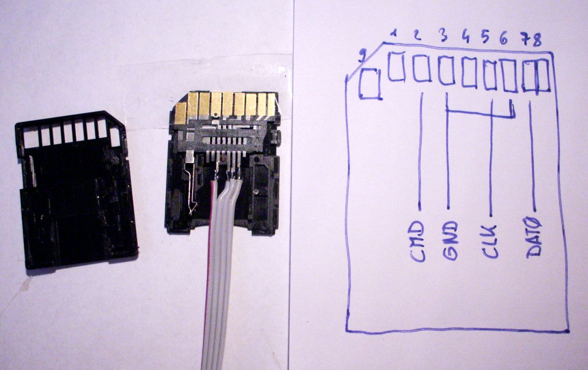

Installing v1.4 (hardmod)
If you need help, ask the NDS(i)Brew Scene Discord server!
We will now install firmware version 1.4, in preparation for RocketLauncher.
You must have decent soldering skills for this to work.
There is a risk of bricking. Please ensure that all steps are followed correctly, and keep the NAND backup we will create in a safe place.
What you need
- Confidence
- An SD card reader able to read eMMC chips running in single data-line mode.
- A pencil-tipped soldering iron, and very fine wire, 28AWG or smaller, preferable 30AWG+.
- A microSD card adapter
- The latest release of ugopwn
- The latest fork of twlbf (bfCL)
- A twlnf firmware v1.4 installation script for your region (USA or EUR)
- The latest release of Python 3
- -
DSi firmware files.zip - The latest release of TWLTool
- The latest release of No$GBA
- The DSi footer template
- The latest release of HxD
- The latest release of NUS Downloader (with sort.py)
- Win32DiskImager
Instructions
Section I - The hardmod
- Power offyour device.
- Disassemble your device
- Put the NAND board (the biggest board) in front of you and examine these images (corresponding to your device)
- Make sure you now where the CLK, GND, CMD, and DAT0 pinouts are and solder them to an microSD card reader
- Turn on the Dsi. The error code that pops up should be
0000FE00 - If it isn't go to troubleshooting
- Stick the microSD card reader into a your SD card reader and insert it to your computer. On windows if it asks you to format it, click no or you will brick!
- Install Win32DiskImager form the downloads and open it
- Click the folder icon and browse to your desktop. In the text box, write NAND_0.bin. When selecting type, choose All types *.*
- Choose the device that is the DSi and click read. Once it is done, click the folder icon,change the name to NAND_1 and read again
- Open HxD and drag both files into the editor. Go to the top bar, click "Analysis",click "File compare" from the drop down menu, then click "Compare".
- Choose to compare both files then click OK when done
- If it says "The chosen files are identical.", you are good to go to the next section
- If it doesn't say that, and both NANDs aren't around 240MB, dump NAND_1/NAND_0 again
- Copy
NAND_0.binto a safe place on your computer. Do not lose this file! It is an essential backup.
Dsi Side A Pinouts 
Dsi Side B Pinouts 
Dsi XL Side B Pinouts 
microSD Exmaple
Section II - Downloading v1.4 Files/Getting CID and Console ID
Part I - Getting CID and Console ID
- Open bfCL and figure out how to use it
- Once your DSi's console ID/CID is dumped, save them in a text file
- This is something I don't currently how to use. If you can't figure it out, wait for this guide to be finished
Part II - Mounting/Decrypting NAND
- Use this command template (replace the Console ID/CID here) and put it in a text file
twltool nandcrypt --cid [CID HERE] --consoleid [ConsoleID HERE] --in NAND_0.bin --out NAND_DEC.bin- Open the folder where Twltool (extracted) is and put your NAND_0.bin there
- Open a terminal in that folder.
- Right click and click on "Open command window here"
- Paste your command and wait for it to finish decrypting your NAND. The outcome should be
NAND_DEC.bin - Install and open OSFMount
- Click the "Mount new..." button, followed by the "Image File" tick mark
- Press the button with the three periods (...) and select NAND_DEC.bin
- Select "Partition 0" when prompted. This file should be around 200 MB
- Uncheck the box that says "Read-Only Drive", and press OK
- Go to the "My Computer" directory, and you should see a new drive. Double-click it
- Open
NUS Downloader.exeand check the box that says "Create Decryped Contents (*.app)" - Select: Database > System (DSi) > System Menu (Launcher) > [Your Region] > v512
- Select "Start NUS Download!"
- When done, select: Database > System (DSi) > Nintendo DS Cart Whitelist > All > v256
- Select "Start NUS Download!"
- When done, select: Database > System (DSi) > System Settings > [Your Region] > v512
- Select "Start NUS Download!"
- When done, select: Database > System (DSi) > Version Data > [Your Region] > v4 (China)
- Select "Start NUS Download!"
- Exit NUS Downloader, and run
sort.pyto prepare the titles for installation. - You now have a new folder called
titlein your NUS Downloader directory. - Drag the titles folder from the NUS Downloader folder into the root of the NAND
- Go to your OSFMount window, and press "Dismount". Exit OSFMount.
- Do steps 1-4 but use NAND_DEC instead of NAND_O, and use this command instead
twltool nandcrypt --cid [CID HERE] --consoleid [ConsoleID HERE] --in NAND_DEC.bin --out NAND_ENC.bin
Part III - Getting Firmware files
Section III - Testing Your Downgraded NAND with NO$GBA and flashing to DSi
- Download and extract NO$GBA to a directory.
- Copy the NAND_ENC.bin file to your NO$GBA directory (make sure you have extracted the NO$GBA archive) and rename it to DSI-1.mmc
- Extract the DSi BIOS files from the "DSi firmware files.zip" archive into the NO$GBA directory
- Download the DSi footer template file and extract it to the NO$GBA directory.
- Open it in HxD.
- Replace the 16 bytes filed with AAs with your CID
- Replace the 8 bytes filed with BBs with your Console ID, but reversed. This means that if your Console ID starts with the byte 26 and ends with 08, for example, it should now end with 26 and start with 08.
- After you have inserted your CID and Console ID, highlight and copy the entire footer file.
- Open DSi-1.mmc and scroll to the end of the file. At the end of the file, paste in the footer.
- Save and close DSi-1.mmc and open No$GBA.
- Go to options and then Emulation setup.
- In the Emulation tab, set “Reset/Startup Entrypoint” to “GBA/NDS BIOS (Nintendo logo)” and NDS Mode Colors to “DSi (retail/16MB)”. Then click Save Now and then OK.
- Go to File, Cartridge Menu (FileName), and then open any .nds file (such as fwtool
- Your NAND will now be emulated by NO$GBA. Check that your NAND works perfectly
- If your encrypted NAND works on NO$GBA, then rename the "NAND_ENC.bin" file to nand_dsi.bin (if it asks you to overwrite, you may want to move the other nand_dsi.bin somewhere else and try renaming it again)
- Move the new nand_dsi.bin to the folder to your desktop. Then open Win32DiskImager, folder icon, choose
nand_dsi.binand flash it with the "Write" button